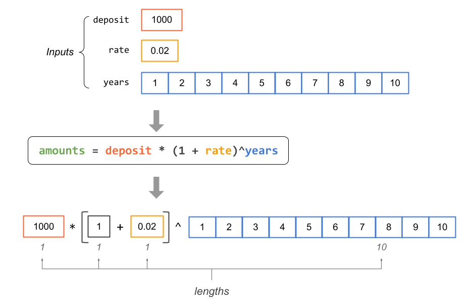
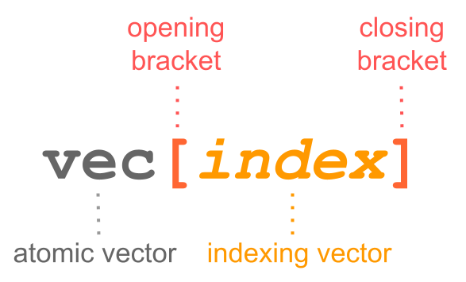

# inputs
deposit <- 1000
rate <- 0.02
# amounts at the end of years 1, 2, 3, ..., 10
amount1 = deposit * (1 + rate)
amount2 = amount1 * (1 + rate)
amount3 = amount2 * (1 + rate)
amount4 = amount3 * (1 + rate)
amount5 = amount4 * (1 + rate)
amount6 = amount5 * (1 + rate)
amount7 = amount6 * (1 + rate)
amount8 = amount7 * (1 + rate)
amount9 = amount8 * (1 + rate)
amount10 = amount8 * (1 + rate)4 More About Vectors
In the previous chapter we started the topic of data objects by introducing R vectors and some of their basic properties. In this chapter we continue the discussion of vectors, specifically the notions of vectorization, recycling, and subsetting.
4.1 Motivation: Future Value
Let’s bring back the savings example from the previous chapters: you have $1000 and you decide to deposit this money in a savings account that pays you an annual interest rate of 2%. We’ve already seen how to calculate the amount of money that you would have at the end of the first, second and third years. Let’s now calculate the saved amount for a 10-year period.
How much money will you have at the end of each year during a 10-year period?
To answer this question, we could compute individual amount objects (e.g. amount1, amount2, amount3, etc) to get the saved amount at the end of each year. For example:
The problem with this piece of code is that it is too repetitive, time consuming, boring, and error prone (can you spot the error?). Even worse, imagine if you were interested in computing the amount of your investment for a 20-year or a 30-year or a longer year period?
The good news is that we don’t have to be so repetitive. Before describing what the alternative—and more efficient—approach is, we need to do a bit of algebra.
4.1.1 Future Value Formula
In one year you’ll have:
\[ 1000 \times (1.02) = 1020 \]
In two years you’ll have:
\[ 1000 \times (1.02) \times (1.02) = 1000 \times (1.02)^2 = 1040.4 \]
In three years you’ll have:
\[ 1000 \times (1.02) \times (1.02) \times (1.02) = 1000 \times (1.02)^3 = 1061.208 \]
Do you see a pattern?
If you deposit $1000 at a rate of return \(r\), how much will you have at the end of year \(t\)? The answer is given by the Future Value (FV) formula. In its simplest version, the formula is:
\[ \text{FV} = \text{PV} \times (1 + r)^n \]
\(\text{FV}\) = future value (how much you’ll have)
\(\text{PV}\) = present value (the initial deposit)
\(r\) = rate of return (e.g. annual rate of return)
\(n\) = number of periods (e.g. number of years)
Keep in mind that there are more sophisticated versions of the FV formula. For now, let’s keep things simple and use the above equation.
If you deposit $1000 at a rate of 2%, how much will you have at the end of year 10?
deposit <- 1000
rate <- 0.02
year <- 10
amount10 <- deposit * (1 + rate)^year
amount10[1] 1218.994Using the formula of the Future Value you can directly compute the amount that you would have at the end of the tenth year. But what about calculating the amounts at the end of each year during that time period? Enter vectorization!
4.2 Vectorization
In order to explain what vectorization is, let me first show you the following R code. Compared to the code snippet above, note that the code below uses a vector years containing a numeric sequence from 1 to 10, thanks to the : (“colon”) operator. This vector years is then used to play the role of the exponent in the Future Value formula:
deposit <- 1000
rate <- 0.02
years <- 1:10 # vector of years
# example of vectorization (or vectorized code)
amounts <- deposit * (1 + rate)^years
amounts [1] 1020.000 1040.400 1061.208 1082.432 1104.081 1126.162 1148.686 1171.659
[9] 1195.093 1218.994The computed object amounts is exactly what we are looking for. This vector contains the saved amounts at the end of each year, from the first year till the tenth year.
The code used to obtain amounts is an example of one of the most fundamental and powerful kinds of operations (computations) in R, and it has its special name: vectorization, also referred to as vectorized code.
When you write code like this:
amounts = deposit * (1 + rate)^yearswe say that your code is vectorized. Technically speaking, this code uses not just vectorization but it also uses something else called recycling, which we will explain in the next section. But let’s describe vectorization first.
So what is vectorization?
Simply put, vectorization means that a given function or operation will be applied to all the elements of one or more vectors, element by element.
Say you want to create a vector log_amounts by taking the logarithm of amounts. All you have to do is apply the log() function to amounts:
log_amounts <- log(amounts)When you create the vector log_amounts, what you’re doing is applying a function to a vector, which in turn acts on all the elements of the vector. Hence the reason why, in R parlance, we call it vectorization.
Most functions that operate with vectors in R are vectorized functions. This means that an action is applied to all elements of the vector without the need to explicitly type commands to traverse all of its values, element by element.
In many other programming languages, you would have to use a set of commands to loop over each element of a vector (or list of numbers) to transform them. But not in R.
Another simple example of vectorization would be the calculation of the square root of all the amounts:
sqrt(amounts) [1] 31.93744 32.25523 32.57619 32.90034 33.22771 33.55834 33.89227 34.22951
[9] 34.57011 34.91410Be careful. Not every function that takes in a vector is necessarily vectorized. An example of a function that does not perform vectorization is the mean() function:
mean(amounts)[1] 1116.872As expected, mean() returns the average or mean value of all the numeric values in the vector amounts. It is not vectorized because it does compute the mean of every element of the input vector.
So be careful, just because a function does a computation with an input vector, it does not mean that its vectorized. Vectorization happens when the same function or action is applied to every element of a vector.
Why should you care about vectorization?
If you are new to programming, learning about R’s vectorization will be very natural and you won’t stop to think about it too much. If you have some previous programming experience in other languages (e.g. C, python, perl), you know that vectorization does not tend to be a native thing.
Vectorization is essential in R. It saves you from typing many lines of code, and you will exploit vectorization with other useful functions known as the apply family functions (we’ll talk about them later in the book).
4.3 Recycling
Closely related with the concept of vectorization we have the notion of Recycling. To explain recycling let’s see an example.
The values in the vector amounts are given in dollars, but what if you need to convert them into values expressed in thousands of dollars?. To convert from dollars to thousands-of-dollars you just need to divide by 1000; for example
- 1,000 dollars becomes 1 thousands-dollars
- 10,000 dollars becomes 10 thousands-dollars
- 1 dollar becomes 0.001 thousands-dollars
Here is how to create a new vector thousands:
thousands <- amounts / 1000
thousands [1] 1.020000 1.040400 1.061208 1.082432 1.104081 1.126162 1.148686 1.171659
[9] 1.195093 1.218994What you just did (assuming that you did things correctly) is called Recycling, which is what R does when you operate with two (or more) vectors of different length.
To understand this concept, you need to remember that R does not have a data structure for scalars (single numbers). Scalars are in reality vectors of length 1.
The conversion from dollars to thousands-of-dollars requires this operation: amounts / 1000. Although it may not be obvious, we are operating with two vectors of different length: amounts has 10 elements, whereas 1000 is a one-element vector. So how does R know what to do in this case?
Well, R uses its recycling principle, which takes the shorter vector (in this case 1000) and recycles its content to form a temporary vector that matches the length of the longer vector (i.e. amounts).
Another recycling example
Here’s another example of recycling. Saved amounts of elements in an odd number position will be divided by two; values of elements in an even number position will be divided by 10:
units <- c(1/2, 1/10)
new_amounts <- amounts * units
new_amounts [1] 510.0000 104.0400 530.6040 108.2432 552.0404 112.6162 574.3428 117.1659
[9] 597.5463 121.8994In this piece of code, the elements of units are recycled (i.e. repeated) as many times as the number of elements in amounts.
To achieve the same result without using recycling you would have to create a vector new_units (i.e. the values to divide by) of the same length as amounts. For example, you could create a vector new_units with the replicate function rep() having ten elements in which those values in odd positions are 1/2 and those values in even positions are 1/10:
new_units <- rep(c(1/2, 1/10), length.out = length(amounts))
amounts * new_units [1] 510.0000 104.0400 530.6040 108.2432 552.0404 112.6162 574.3428 117.1659
[9] 597.5463 121.89944.3.1 Vectorization and Recycling
Let’s bring back the code that uses the Future Value to obtain the vector amounts:
amounts = deposit * (1 + rate)^yearsRecall that deposit and rate are vectors of length 1. And so it is the number 1, it is a vector containing just one element. In contrast, years has 10 elements. This means that R is dealing with four vectors some of which have different lengths.
In pictures, we have the following diagram:

How does R take care of this?
The following diagram depicts what R does behind the scenes: R recycles the shorter vectors to match the length of the longest vector. In this example, vectors deposit, rate, and 1 are the shorter vectors, which are then recycle to match the length of the longest vector years. The computation process is completed with vectorization.

As you can tell, this is an example of vectorization & recycling rules in R.
4.4 Manipulating Vectors: Subsetting
In addition to creating vectors, you should also learn how to do some basic manipulation of vectors. The most common type of manipulation is called subsetting, also known as indexing or subscripting, which we use to extract and also replace elements of a vector (or another R object). To do so, you use what I like to call bracket notation. This implies using (square) brackets [ ] to get access to the elements of a vector.
To subset a vector, you type the name of the vector, followed by an opening and a closing bracket. Inside the brackets you specify an indexing vector which could be a numeric vector, a logical vector, and sometimes a character vector. Let’s see these options in more detail in the following subsections.

4.4.1 Numeric Subsetting
This type of subsetting, as the name indicates, is when the indexing vector consists of a numeric vector with one or more values that correspond to the position(s) of the vector element(s).
The simplest type of numeric subsetting is when we use a single number (which is a vector of length one).
# amount at end of year 1
amounts[1][1] 1020The numeric indexing vector can have more than one element. For example, if we want to extract the elements in positions 1, 2 and 3, we could provide a numeric sequence 1:3:
# amounts at end of years 1, 2, and 3
amounts[1:3][1] 1020.000 1040.400 1061.208The numeric positions don’t have to be consecutive numbers. You can also use a vector of non-consecutive numbers:
# amounts at end of years 2 and 4
amounts[c(2, 4)][1] 1040.400 1082.432Likewise, we can also use a vector with repeated numbers:
# repeated amounts
amounts[c(2, 2, 2)][1] 1040.4 1040.4 1040.4In addition to the previous subscripting options, we can specify negative numbers to indicate that we want to exclude an element in the associated position:
# exclude 2nd year
amounts[-2][1] 1020.000 1061.208 1082.432 1104.081 1126.162 1148.686 1171.659 1195.093
[9] 1218.994# exclude 2nd and 4th years
amounts[-c(2, 4)][1] 1020.000 1061.208 1104.081 1126.162 1148.686 1171.659 1195.093 1218.9944.4.2 Character Subsetting
Sometimes, you may have a vector with named elements. When this is the case, you can use a character vector—containing one or more of the element names—as the indexing vector.
None of the vectors that we have created so far have named elements. So let’s see how to do this. One way to give names to the elements of an existing vector is with the function names()
amounts3 = amounts[1:3]
names(amounts3) = c("y1", "y2", "y3")
amounts3 y1 y2 y3
1020.000 1040.400 1061.208 When a vector, like amounts3, has named elements, we can use those names for subsetting purposes. Instead of using a numeric vector we use a character vector. Hence the term character subsetting.
For example, to extract the element in amounts3 that has name "y1" we pass this string inside the brackets:
amounts3["y1"] y1
1020 To get the elements in amounts3 that have names "y1" and "y3", we can write
amounts3[c("y1", "y3")] y1 y3
1020.000 1061.208 And like in the numeric subsetting case, we can also write a command such as:
amounts3[c("y2", "y2", "y2", "y1")] y2 y2 y2 y1
1040.4 1040.4 1040.4 1020.0 4.4.3 Logical Subsetting
Another type of subsetting is when we use a logical vector as the indexing vector.
Let me show you an example of logical subsetting. In this case, we will use a logical vector with three elements c(TRUE, FALSE, FALSE) and pass this inside the brackets:
amounts3[c(TRUE, FALSE, FALSE)] y1
1020 As you can tell, the retrieved element in amounts3 is the one associated to the TRUE position, whereas those elements associated to the FALSE values are excluded. This is how the logical values (in the indexing vector) are used:
TRUEmeans inclusionFALSEmeans exclusion
So, if we want to extract only the element in the second position, we could write something like this:
amounts3[c(FALSE, TRUE, FALSE)] y2
1040.4 Now, I have to say that doing logical subsetting in this way is not really how we tend to use it in practice. In other words, we won’t be providing an explicit logical vector, typing a bunch of TRUE’s and FALSE’s values. Instead, what we typically do is to provide a command that, when executed by R, will return a logical vector.
Consider the following example. We create a vector x, and then we use the greater than symbol > to compute a mathematical comparison which in turn will return a logical vector.
x = c(2, 4, 6, 8)
x > 5[1] FALSE FALSE TRUE TRUEKnowing that x > 5 produces a logical vector in which FALSE indicates that the number is less than or equal 5, and TRUE indicates that the number is greater than 5, we can write the following command to subset those elements in x that are greater than five:
x[x > 5][1] 6 8This is a simple example of logical subsetting because the indexing vector is the logical vector that comes from executing the comparison x > 5.
Here is a less simple example of logical subsetting to extract the elements in x that are greater than 3 and less than or equal to 6. This requires
two comparison expressions, x > 3 and x <= 6, and the use of the logical AND operator & to form a compound logical comparison:
x[x > 3 & x <= 6][1] 4 64.4.4 Summary of Subsetting
In summary, the things that you can specify inside the brackets are three kind of vectors:
numeric vectors
logical vectors (the length of the logical vector must match the length of the vector to be subset)
character vectors (if the elements have names)
In addition to the brackets [], some common functions that you can use on vectors are:
length()gives the number of valuessort()sorts the values in increasing or decreasing waysrev()reverses the valuesunique()extracts unique elements
length(amounts3)
amounts3[length(amounts3)]
sort(amounts3, decreasing = TRUE)
rev(amounts3)4.5 Exercises
1) Explain, in your own words, the concept of vectorization a.k.a. vectorized operations in R.
Show answer
# Vectorization (or vectorized code) is when R applies calculations or
# operations to all the elements of a vector (element-wise)2) Explain, in your own words, the recycling principle in R.
Show answer
# Recycling is what R does when you perform a calculation with vectors
# of different length3) Write 2 different R commands to return the first five elements of a vector x (assume x has more than 5 elements).
Show answer
x[1:5]
head(x, 5)4) Suppose y <- c(1, 4, 9, 16, 25). Write down the R command to return a vector z, in which each element of z is the square root of each element of the vector y.
Show answer
y <- c(1, 4, 9, 16, 25)
z <- sqrt(y)5) Which command will fail to return the first five elements of a vector x? (assume x has more than 5 elements).
x[1:5]x[c(1,2,3,4,5)]head(x, n = 5)x[seq(1, 5)]x(1:5)
Show answer
# command e)6) For each the following parts, state whether the given function or operator is vectorized, and provide a code example to support your claim.
length()*log()max()trunc()
Show answer
# a) not vectorized
# b) vectorized
# c) vectorized
# d) not vectorized
# e) vectorized7) Consider the following code to obtain vectors name and mpg from the data set mtcars that contains data about 32 automobiles (1973–74 models).
# vectors name and mpg
name = rownames(mtcars)
mpg = mtcars$mpgUse seq(), and bracket notation, to subset (extract):
- all the even elements in
name(i.e. extract positions 2, 4, 6, etc)
Show answer
name[seq(from = 2, to = length(name), by = 2)]- all the odd elements in
mpg(i.e. extract positions 1, 3, 5, etc)
Show answer
mpg[seq(from = 1, to = length(mpg), by = 2)]- all the elements in positions multiples of 5 (e.g. extract positions 5, 10, 15, etc) of
mpg
Show answer
mpg[seq(from = 5, to = length(mpg), by = 5)]- all the even elements in
namebut this time in reverse order; hint therev()function is your friend.
Show answer
name[seq(from = length(name), to = 2, by = -2)]
# equivalently
rev(name[seq(from = 2, to = length(name), by = 2)])8) Consider the following code to obtain vectors name, mpg and cyl from the data set mtcars that contains data about 32 automobiles (1973–74 models).
# vectors name, mpg and cyl
name = rownames(mtcars)
mpg = mtcars$mpg # miles-per-gallon
cyl = mtcars$cyl # number of cylindersWrite commands, using bracket notation, to answer the parts listed below. You may need to use is.na(), sum(), min(), max(), which(), which.min(), which.max():
- name of cars that have a fuel consumption of less than 15 mpg
Show answer
name[mpg < 15]- name of cars that have 6 cylinders
Show answer
name[cyl == 15]- largest mpg value of all cars with 8 cylinders
Show answer
max(mpg[cyl == 8])- name of car(s) with mpg equal to the median mpg
Show answer
name[mpg == median(mpg)]- name of car(s) with mpg of at most 22, and at least 6 cylinders
Show answer
name[mpg <= 22 & cyl >= 6]